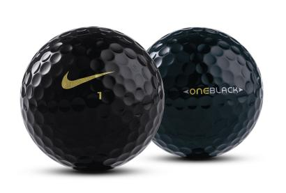

With PGA Tour wins already in 2005 from two of its players — Tiger Woods and Justin Leonard — officials at Nike Golf almost felt like a third one came out of last week's FBR Open in Scottsdale, Ariz.
All because of a black golf ball with a gold swoosh on it.
Placed on a tee at your local municipal course, it would have been cool enough. Used at the TPC at Scottsdale by Nike staff members Leonard, Stewart Cink, K.J. Choi and Rory Sabbatini as a promotional tool for a black version of the Nike One Black, it was very cool, hyped by 35,000 mostly beer-goggled fans at the rowdiest hole in golf, the par-3 16th.

Duluth resident Cink on Thursday holed his black Nike One Black there for a 30-foot birdie. During Saturday's third round, Cink, Sabbatini and Choi wound up paired together, drawing even more attention to the black ball, which will be sold in limited quantities, with two added to each dozen of either the white Nike One Black or Nike One Gold's.
John Cook actually played the black ball first, at the Sony Open at Hawaii in January.
"You have to just forget about the ball and swing the club," Cink said. "It's hard to see it if you don't hit the green."
Nike's Dean Stoyer said the company made certain that changing to the black ball in midround would be legal, discussing it beforehand with both PGA Tour and USGA rules officials. A substituted ball must match specifications of the original ball, but paint color does not matter.
Stoyer said the ball might appear again at a high-profile par-3, perhaps next week at Riviera Country Club during the Nissan Open. There even is talk about the island par-3 17th at TPC Sawgrass during The Players Championship, but Stoyer said, "That might be a little risky."